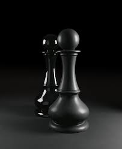

Il pedone
Il pedone si muove...LEGGI ALTRO

L'alfiere

L'alfiere' si muove...LEGGI ALTRO

Gli scacchi (dal provenzale e catalano antico escac, che a sua volta discende dal persiano شاه shāh, "re"[1][2]) sono un gioco di strategia che si svolge su una tavola quadrata detta scacchiera, formata da 64 caselle (o "case") di due colori alternati, sulla quale ogni giocatore dispone di 16 pezzi (bianchi o neri; per traslato, "il Bianco" e "il Nero" designano i due sfidanti[3]): un re, una donna (o "regina"), due alfieri, due cavalli, due torri e otto pedoni; ogni casella può essere occupata da un solo pezzo, che può catturare o "mangiare" il pezzo avversario andando a occuparne la casella; obiettivo del gioco è dare scacco matto, ovvero minacciare la cattura del re avversario in modo tale che l'altro giocatore non abbia mosse legali.[4] Nati in India intorno al VI secolo d.C., gli scacchi giunsero in Europa verso l'anno 1000, con ogni probabilità grazie alla mediazione degli Arabi; diffusisi nell'intero continente, raggiunsero una forma pressoché moderna nel XV secolo in Italia e in Spagna, seppure per arrivare al regolamento completo attuale si debba attendere il XIX secolo. Successivamente, a partire dalla metà dell'Ottocento, per merito di Paul Morphy e Wilhelm Steinitz iniziarono a codificarsi i fondamenti strategici del gioco; nel 1886 lo stesso Steinitz, dopo una sfida contro Johannes Zukertort, si proclamò primo campione del mondo. Fra i giochi più popolari al mondo, possono essere giocati ovunque (a livello ricreativo o agonistico): in casa, all'aperto, nei circoli dedicati, via Internet e talora per corrispondenza; le maggiori competizioni ufficiali sono organizzate sotto l'egida della FIDE (la "Federazione Internazionale degli Scacchi"). Il gioco degli scacchi è alquanto complesso: si stima che il numero di combinazioni legalmente ammesse dei 32 pezzi sulle 64 case della scacchiera sia compreso fra 1043[5] e 1050,[6] e che la dimensione dell'albero delle mosse sia pressappoco di 10123;[6][7] il numero di possibili partite diverse è circa 101050.[8][9] LEGGI ALTRO
Il pedone si muove...LEGGI ALTRO
L'alfiere' si muove...LEGGI ALTRO